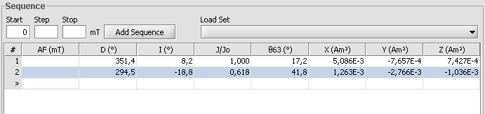
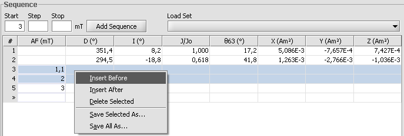
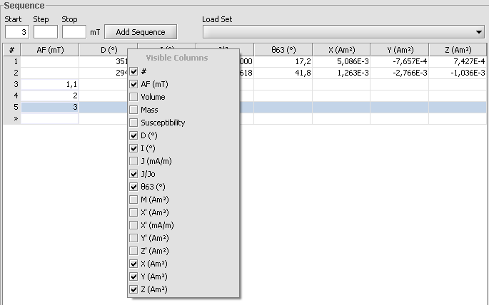
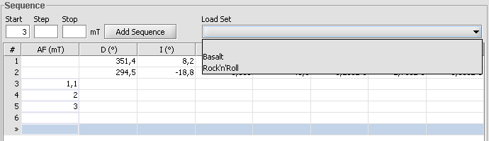
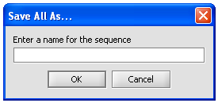

Sequence panel
This component is used for editing sequence for project. Each row represents one measure.
Adding sequence
There is three ways to add sequences. Using Start-step-end fields, editing table directly and using sets (see section Using Sequence Sets).
Using Start-step-end fields you can add automaticly sequences which goes from start with steps to end. If there is already existing sequence this new sequence is added after that. First you need to put values on each field and click 'Add Sequence'-button. After this sequence is added and notice that end field is now start field so you can but easily second sequences after this one.
Editing table directly can be done in many ways. Every step which havent been measured can be edited directly from table. Just select field with you mouse and you can edit it as normal text field. Notice that fields accept only legal values. There is also always one empty row at end. You can select it, type value and push 'enter'-key when new value is added to end.
Modifying sequence
You can also edit sequence. As noticed before all fields that are not measured can be modified directly on clicking them. You can also select rows with left mouse click and select multiple rows dragging mouse over rows or left mouse clicking with 'CTRL'-key down or left mouse clicking with 'SHIFT'-key down. After you have a selection you can click right mouse button to invoke menu.
From this menu you can select 'Delete Selected' which deletes are selected rows. You can also add empty rows After or Before selection. When you click Insert After selection there will be as many empty rows as there is selected rows After all selected rows. And after you click Insert Before those empty rows are added before selected rows.
Selecting columns
You can select which columns are shown on table. This can be modified by Right mouse clicking on column headers as shown in screenshot.
From here you can left mouse click on columns, selecting which you want to see and which not. You can also edit from Options project default columns.
Using sequence sets
You can also use saved sets to add in your sequence. From 'Load Set'-list you can select saved sets. When you select one from list, its added in End of your sequence.
To make your own saved sets you can select rows you want to include in new set and then Right mouse click on table to invoke menu
From this menu you can select to 'Save Selected as..' or 'Save All as..'. 'Save Selected as..' saves only those rows you have selected and 'Save All as..' saves all rows you have in current table. After you click one of those you have pop-up which asks for name of your new set. After you click 'Ok' new set is added to list. You can also delete saved sets from Options.
Modifying other values
There is 4 editable columns. In addition to AF demag field (or in thellier Temperature) you can also modify columns Mass, Volume and Suspectibility for each row. This can be used if you would like to measure different samples in same project and differ their values. Those edited values affect only the specific rows calculations.